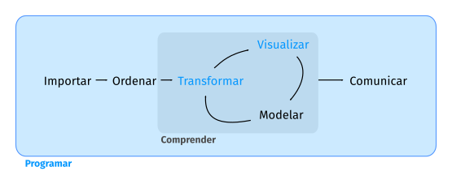

(PART) Programar
Introducción
En esta parte del libro mejorarás tus habilidades de programación. La programación es una destreza transversal en todo el trabajo en ciencia de datos: es necesario usar una computadora para hacer ciencia de datos, no puedes hacerla solo con tu cabeza o con lápiz y papel.
Programar produce código y el código es una herramienta de comunicación. Obviamente, el código le dice a la computadora qué es lo que quieres que haga, pero también comunica significado a otros seres humanos. Es importante pensar el código como un medio de comunicación, ya que todo proyecto que realices es esencialmente colaborativo. Aun cuando no estés trabajando con otras personas, definitivamente lo estarás haciendo con tu futuro yo. Escribir código claro es importante para que otras personas (o tú en el futuro) puedan entender por qué encaraste un análisis de la manera que lo hiciste. Esto significa que mejorando cómo programas mejorarás también cómo comunicas. Con el tiempo querrás que tu código resulte no solo más fácil de escribir, sino también más fácil de leer para los demás.
Escribir código es similar en muchas formas a escribir prosa. Un paralelismo que encontramos particularmente útil es que en ambos casos reescribir es la clave para la claridad. Es poco probable que la primera expresión de tus ideas sea particularmente clara, por lo que es posible que necesites reescribir muchas veces. Después de resolver un problema de análisis de datos, en general vale la pena mirar tu código y pensar si es obvio o no lo que has hecho. Si dedicas un poco de tiempo a reescribir tu código mientras las ideas están frescas, puedes ganar mucho tiempo después, cuando necesites recrear lo que tu código hizo. Esto no significa que debas reescribir todas las funciones: necesitas encontrar un equilibrio entre lo que necesitas lograr ahora y ahorrar tiempo a largo plazo. (Aunque cuanto más reescribas tus funciones, más probable será que tu primer intento sea claro).
En los próximos cuatro capítulos aprenderás habilidades que te permitirán tando abordar nuevos programas como resolver problemas ya existente con mayor claridad y facilidad:
En [Pipes], navegarás dentro del pipe,
%>%, y aprenderás más sobre cómo trabaja, qué alternativas existen y cuándo no conviene usarlo.Si bien copiar-y-pegar (copy-and-paste) es una herramienta poderosa, deberías evitar utilizarla más de dos veces. Repetir el código es peligroso porque puede llevar a errores e inconsistencias. Por eso, en [Funciones] aprenderás a escribir funciones que permitan extraer código repetido para que pueda ser reutilizado con facilidad.
A medida que comiences a escribir funciones más potentes, necesitarás una base sólida acerca de las estructuras de datos de R que te la proporcionará [Vectores]. Deberás dominar los cuatro tipos de vectores atómicos clásicos, las tres clases S3 construídas sobre ellos y entender los misterios de la lista y el data frame.
Las funciones nos permiten evitar la repetición de código; sin embargo, muchas veces necesitas repertir las mismas acciones con diferentes inputs. Puedes hacer esto con herramientas de iteración, las que te permitan hacer cosas similares una y otra vez. Estas herramientas incluyen bucles (loops) y programación funcional, acerca de las cuales aprenderás en [Iteración].
Aprendiendo más
El objetivo de estos capítulos es enseñarte lo mínimo acerca de programación que necesitas para hacer ciencia de datos, lo que resulta una cantidad considerable de información. Una vez que hayas dominado el material de este libro, creemos firmemente que deberías invertir tiempo en mejorar tus habilidades de programación. Aprender más sobre programación es una inversión a largo plazo: no obtendrás resultados inmediatos, pero a la larga te permitirá resolver nuevos problemas más rápidamente y te permitirá reutilizar el conocimiento que adquiriste en nuevos escenarios.
Para profundizar necesitas estudiar R como un lenguaje de programación, no solo como un ambiente interactivo para ciencia de datos. Escribimos dos libros que te ayudarán con esto, aunque actualmente están disponibles solo en inglés:
Hands on Programming with R, de Garrett Grolemund. Esta es una introducción a R como lenguaje de programación y es un buen lugar para empezar si R es el primer lenguaje que aprendes. Cubre casi el mismo material que estos capítulos, pero con un estilo diferente y con distintos ejemplos de motivación (basados en el casino). Es un complemento muy útil si consideras que estos cuatros capítulos van demasiado rápido.
Advanced R de Hadley Wickham. Este libro se sumerge en los detalles del lenguaje de programación R. Este es un buen punto por donde empezar si ya tienes experiencia en programación. Es también una buena manera de seguir una vez que hayas internalizado las ideas de estos cuatro capítulos. Puedes leerlo online en el sitio https://adv-r.hadley.nz/.